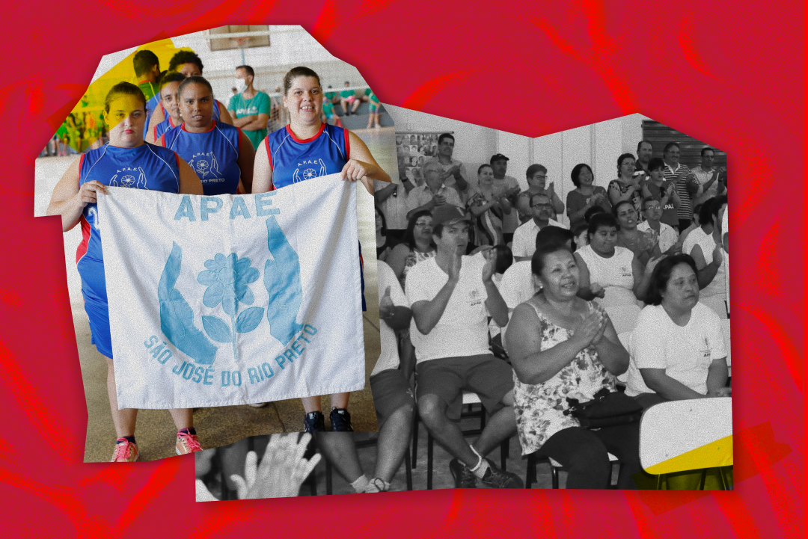

Direito à diferença na escola
Entre as políticas que atendem aos sujeitos da diversidade, aquelas voltadas para o – pessoas com deficiência (PcD), com transtornos globais de desenvolvimento (TGD) e com altas habilidades – enfrentam dificuldades para a sua implementação por dois motivos centrais: a consolidação da concepção de inclusão e a necessidade de superação das barreiras físicas, materiais e pedagógicas nas instituições educacionais.
A concepção de inclusão no Brasil surgiu em meados da década de 1980, durante o processo de redemocratização política. Como já vimos no capítulo 2, os movimentos sociais, em suas diferentes configurações e reivindicações, atuaram de forma decisiva nesse período, propondo pautas no campo educacional que, ao se articularem, conformaram um conjunto de forças capaz de pressionar o Estado brasileiro a assumir os direitos reivindicados como políticas públicas. Na luta pela redemocratização, a formulação do conceito de inclusão instaurou o debate público sobre modelo de sociedade normalizante e sobre a exclusão dos sujeitos da diversidade.
Até então, pessoas com deficiência ou com alguma divergência em relação ao padrão de desenvolvimento humano eram uma responsabilidade exclusiva de suas famílias, ou seja, uma questão de ordem privada. Cabia ao núcleo familiar encontrar formas de adaptação possíveis, partindo da compreensão de que seus entes carregavam um déficit consigo. Em outras palavras, o “problema” eram as pessoas que não se adequavam à sociedade e não a sociedade que normalizou alguns padrões que deixavam para trás aqueles que não podiam atuar, viver e interagir dentro das habilidades, experiências e possibilidades que carregavam.
Ao longo da história, a forma como as sociedades lidaram com as deficiências revela muito sobre seus valores e suas estruturas. Em diferentes períodos, os sujeitos da diversidade foram marginalizados, escondidos ou até abandonados, não apenas por escolha das famílias, mas como reflexo da ausência de políticas públicas que garantissem suporte e inclusão. Com isso, a ideia de que as famílias negavam seus entes com deficiência traz uma culpabilidade.
Nos séculos passados, essa exclusão assumiu formas ainda mais severas. Na Idade Média, por exemplo, a deficiência era frequentemente vista como um castigo, levando pessoas com algum tipo de deficiência a serem abandonadas em abrigos. Em sociedades mais primitivas, o abandono em florestas era uma prática recorrente, pois acreditava-se que sua presença poderia comprometer a sobrevivência do grupo.
Assim, ocorreu que, no debate da redemocratização e da conquista de direitos humanos, coube questionar onde havíamos deixado a humanidade dos sujeitos PcDs e TGD, sobretudo. Se eram pessoas, seres humanos, por que as políticas públicas, a sociedade e o Estado não se moviam para atendê-las? Essa indagação evidenciou a urgência de reconhecer as questões dos sujeitos da diversidade não mais como uma pauta da vida privada, mas como uma questão de ordem pública.
No campo da educação, houve um confronto com a ideia de integração que predominava nas escolas desde a década de 1970. Por esta perspectiva, os estudantes PCDs, TGD ou com altas habilidades participavam do espaço escolar, mas sem dele efetivamente pertencer. Em tese, a concepção da integração quis superar a ideia da segregação, que levou crianças e jovens às escolas especiais como as. Desse modo, estudantes PcDs, TGD e com altas habilidades, sob a perspectiva da integração, ficavam destinados a se adequarem ao “normal” instituído pela escola. Não havia uma política de alteração das estratégias pedagógicas e físicas dos ambientes e, na prática, predominava a ideia de que o público da Educação Especial era responsável pelo seu déficit. A socialização era vista como o principal objetivo da presença desses estudantes na escola, o que, na realidade, perpetuava a segregação dentro do espaço escolar.

Título: História da Associação de Pais e Amigos Excepcionais
Fonte: Paula Araújo (2000); Morelli (2022).
Elaboração: Prosa (2025b).
Em contrapartida, a inclusão traz consigo a ideia de que a escola deve adaptar-se para receber as diversidades – concepção surgida na década seguinte ao conceito de integração. Ela busca garantir a participação plena e igualitária de todos, rompendo barreiras de exclusão e provocando uma mudança na cultura escolar. É um ato de equidade entre diferentes indivíduos. Segundo Elís Cabral, Luiza Mota e Tereza Gomes (2022, p. 4),
As escolas inclusivas precisam reconhecer e responder às necessidades diversificadas de seus alunos, acomodando os diferentes estilos e ritmos de aprendizagem e assegurando educação de qualidade para todos mediante currículos apropriados, mudanças organizacionais, estratégias de ensino, uso de recursos e parcerias com suas comunidades.
Sugestão de video: ações em direção a Educação Inclusiva
Título: Ações em direção a Educação Inclusiva
Fonte: Capital Natural (2025).
A educação de crianças e jovens no Brasil é um direito garantido constitucionalmente, mas ainda enfrentamos grandes dificuldades quanto à estrutura do Ensino Básico para acolher, de forma adequada, estudantes com algum tipo de deficiência – seja ela intelectual, física, motora, visual ou auditiva.
Por isso, indicamos fortemente que você assista ao vídeo do canal Capital Natural acima, que apresenta um debate sobre Educação Inclusiva entre os convidados Maria Teresa Mantoan, doutora e docente em Psicologia Educacional da Universidade Estadual de Campinas (Unicamp), e Rodrigo Mendes, presidente do Instituto Rodrigo Mendes, uma organização sem fins lucrativos.
Entender e fazer uma escola atuar na perspectiva inclusiva não é uma tarefa fácil. São desafios que perpassam currículo, formação, condições físicas, suportes materiais e equipe multidisciplinar. Mas há um desafio muito basilar, que é a concepção de que há um padrão de competências entendidas como normais que está enraizada na sociedade e, consequentemente, em nós. Há, no campo da EPT, ainda um desafio maior, que se relaciona à ideia da vida produtiva: as exigências do modelo capitalista, que transforma trabalho em mercadoria, desqualificam as pessoas que não podem atender aos padrões de produtividade, quer seja no alcance de metas, quer seja na adequação de seus corpos aos postos de trabalho disponibilizados.
Mesmo quando uma escola tem uma equipe sensibilizada para acolher estudantes PcDs, TGD e com altas habilidades, quantos de nós entendemos que, de fato, é possível uma pessoa cadeirante ser um Técnico em Segurança do Trabalho? Podemos negar que, em algum momento, questionamos como ela irá fazer caso precise se movimentar em uma empresa? Ou, ainda, não manifestamos nossa ignorância ao duvidar da confiabilidade do projeto estrutural de uma casa feito por um estudante autista? Esses questionamentos se estendem também para as atividades de sala de aula: de que forma validar a aprendizagem de uma pessoa com deficiência intelectual que não consegue aprender alguns conceitos da maneira que os demais conseguem? E como fazer para incluí-lo em uma aula regular?
As respostas a essas perguntas podem ser outras duas perguntas fundamentais: será que não carregamos uma descrença nas pessoas com deficiência ou com transtornos? Qual projeto de educação e trabalho que fundamenta as ações da gestão da escola?
.png)
Título: O apagamento de pessoas com deficiência
Fonte: Prosa (2025c).
Antes de tudo, é preciso entender que as diversidades são condições inerentes a todos os seres humanos. Ninguém aprende igual a ninguém, nem nos mesmos tempos, nos mesmos modos ou com as mesmas estratégias. Pensemos por um instante: se uma turma for composta apenas por estudantes típicos, ou seja, sem nenhum estudante PcD, TGD, altas habilidades ou outras diversidades, todos aprendem de maneira igual? Quantas vezes é preciso que o docente explique de novo ou dê atenção individual aos estudantes? Quantas vezes, só depois de fazer alguma analogia com algo vivido pelas pessoas da turma, é que a aprendizagem acontece? Portanto, fica evidente que a ideia da inclusão perpassa pela superação dos padrões normalizantes de aprendizagem que construímos na sociedade e na escola.
A EPT, mobilizada pelo conceito de omnilateralidade, parte do princípio de que o processo educativo seja contextualizado. Isso significa que cada estudante deve ter suas potencialidades estimuladas a partir da construção de conhecimentos por meio dos diversos caminhos possíveis, estando em diálogo com a produção científica, cultural e social historicamente acumulada. Nessa direção, a Educação Inclusiva encontra alguns princípios da Educação Integrada, no que tange à defesa do direito à educação e à ideia de que o conhecimento é para todos.
A concretização de uma proposta de educação que se quer, de fato, inclusiva perpassa pela diferenciação curricular, que é um conjunto de estratégias, metodologias e recursos para garantir que todos possam ter acesso aos conhecimentos ofertados na escola e possam participar de todo o processo educacional. Em outras palavras, é um caminho promotor de justiça curricular. Renata Porcher Scherer (2022, p. 2), ao discutir sobre isso, aponta que a diferenciação curricular é
uma ação pedagógica que opera no interior de uma concepção de justiça curricular em que todos os estudantes teriam direito a um conjunto de conhecimentos considerados essenciais e no campo da diferenciação concebe percursos e pontos de chegadas diferenciados para os sujeitos.
No contexto da inclusão e justiça curricular, é importante compreender que há diferenciação educacional positiva e a negativa. A primeira, positiva, se refere aos desdobramentos de práticas pedagógicas diferenciadas promotoras da inclusão e do sucesso de todos os alunos, respeitando suas diferenças individuais. Isso significa adaptar o ensino às necessidades, ritmos e estilos de aprendizagem dos alunos; valorizar a diversidade como um recurso pedagógico, não como um obstáculo; oferecer múltiplas formas de aprender e demonstrar conhecimento; criar ambientes acolhedores; usar materiais adaptados, ensino em pequenos grupos, avaliação formativa, ensino por projetos etc.
Já a segunda, a diferenciação educacional negativa ocorre quando práticas pedagógicas reforçam desigualdades ou excluem certos alunos, mesmo que não intencionalmente. Isso ocorre quando se rotula ou segrega alunos com base em desempenho ou comportamento; se aplica os mesmos métodos e avaliações para todos, ignorando diferenças individuais; desvalorizam-se saberes culturais ou experiências de alunos provenientes de camadas populares; geram-se estigmas, como “aluno fraco” ou “difícil”, afetando autoestima e motivação; realizam-se reprovações sistemáticas e falta o apoio individualizado etc.
Assim, uma escola inclusiva pressupõe que todo estudante tenha garantido o acesso, a participação, o reconhecimento de sua condição, a valorização de suas potencialidades e a aprendizagem. Para tanto, é importante constituir, no ambiente escolar, a ideia de que é possível vivermos com nossas diferenças, mas que isso exige um que possibilitem a sensibilização, a mobilização e a atuação de toda comunidade escolar para seguirmos pensando a educação e as instituições de ensino como espaços democráticos. Nessa direção, torna-se necessário enfrentar os limites concretos que impedem essa vivência coletiva, como as barreiras físicas e pedagógicas no cotidiano escolar. Esse é o segundo motivo que justifica a construção de uma política educacional efetiva para estudantes PcDs, TGD e com altas habilidades – que podemos traduzir como acessibilidade.
Para refletir: efetivação da inclusão
Chegamos ao primeiro momento de reflexão deste capítulo! Lembre-se de registrar suas impressões em seu Memorial e/ou seguir as orientações do seu tutor.
Como tem se efetivado a inclusão de estudantes PcDs, TGD e com altas habilidades na sua instituição de ensino? As práticas pedagógicas desenvolvidas e as condições materiais geram maior inclusão ou ainda promovem alguma segregação?